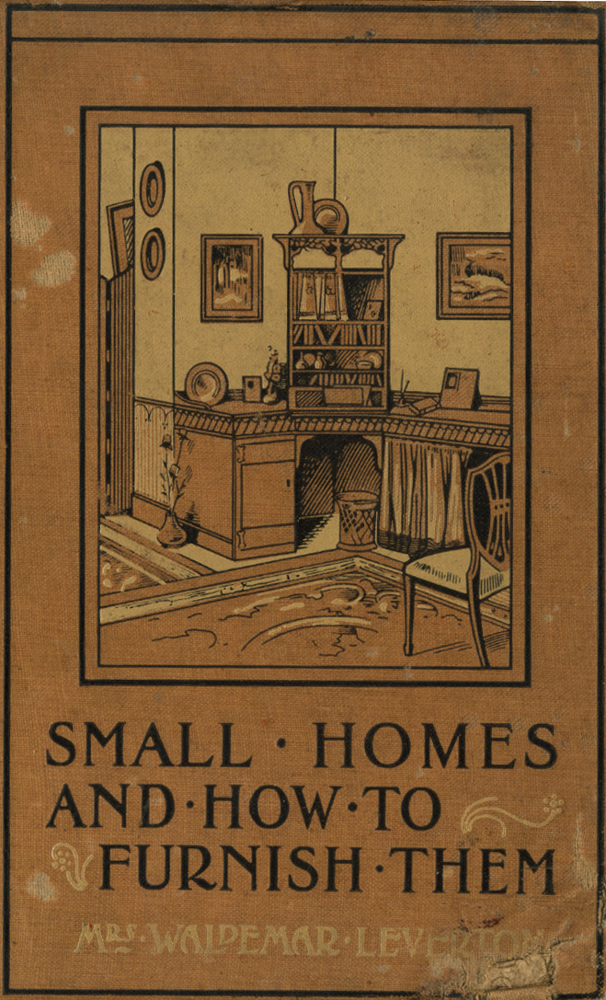
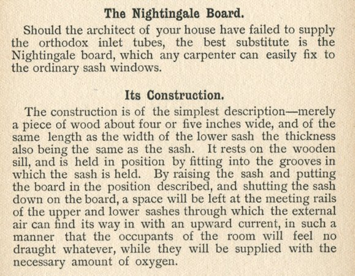
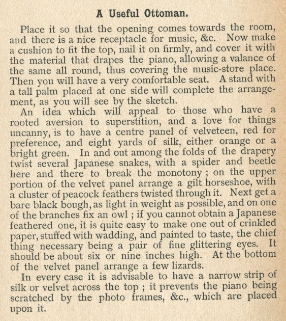

Thursday, August the 7th, 2008
back to: title, date or indexes
For most of us, the words “Nightingale Board” call to mind that empanelled panel of eminent persons who devote valuable time to the counting and measuring and tallying and calculating of nightingales and nightingale populations, their habitats, flight patterns, wingspans, song variations and much else that is nightingale-related, sometimes tangentially. I have been meaning to write about the Nightingale Board for some time now, and regret the distractions of voodoo pig husbandry, ditch digging, aimless lolloping and despair which have prevented me from doing so. What I had in mind was to do a comparative study of the Nightingale Board and the Hummingbird Board, the latter an equally tireless band of empanelled persons who count and measure and tally and calculate all things hummingbird-related. I had, in fact, set aside this morning to attack the project with vim and verve, having farmed out the voodoo pig husbandry and ditch digging to a paid companion, made a promise to myself not to lollop, aimlessly or otherwise, and countered despair by drinking an infusion of Baxter's Perky-Uppy Expectorant Fluid. After vomiting into an iron pail, I planned to sit down and bash out thousands of words on both the Nightingale Board and the Hummingbird Board.
Alas! As I wiped my chin with a rag, the postie brought a letter from Hooting Yard reader Roland Clare, drawing my attention to a completely different Nightingale Board. Mr Clare has borrowed from his brother a book entitled Small Homes And How To Furnish Them by Mrs Waldemar Leverton, published in London in 1903 by C Arthur Pearson Ltd.

With great diligence, Mr Clare has executed some photorealist pencil drawings of selected paragraphs from the book, the first of which tells us about this other Nightingale Board:

Elsewhere in the book there is a splendid passage instructing the reader on the important matter of toy owl construction:

According to Mr Clare, it is thought that “Mrs Waldemar Leverton” is a pseudonym, an anagram of the name of the true author of this excellent book, the Rev. Lowland Stammerer. Intriguingly, that godly man was a founder member of the very first Nightingale Board to be empanelled in his bailiwick. He may also have been involved in the Hummingbird Board, though my researches into that must sadly be postponed yet again, for I must lollop aimlessly now, in despair, while my paid companion husbands voodoo pigs and digs a ditch.
Hooting Yard on the Air, September the 11th, 2008 : “Diaries Of The Dead” (starts around 08:26)